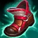
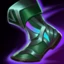

Runy
Build
Core build
Everfrost, Boots of Lucidity a Cosmic drive jsou pro Sylase téměř každou hru tou nejlepší volbou. Tento build poskytuje velké množství AP a Ability haste, což Sylasovi dovolí používat schopnosti častěji a udělovat větší poškození. Bonusové zdraví a rychlost pohybu mu umožňuje přežít v boji na blízko.
Alternativní core
Liandry's Anguish a Sorcerer's Shoes se hodí proti odolnějším a houževnatějším nepřátelům, poskytují totiž bonusové poškození odvozené z nepřítelova maximálního zdraví a snižují jeho odolnost vůči magii. Liandry's také můžete zakoupit když už předem víte, že znehybňovací schopnost Everfrostu pro vás nebude příliš užitečná.
Defenzivní předměty

Za Sylase byste měli každou hru pořídit alespoň jeden defenzivní předmět. Zhonya's Hourglass vám poskytne menší odolnost proti fyzickému poškození spolu se schopností na 2,5 sekund ztuhnout na místě a být po tu dobu nezranitelný. Banshee's Veil naopak poskytuje odolnost vůči magickému poškození a dává vám jednorázový štít proti schopnostem, který se obnovuje po 40 sekundách.
Lategame předměty
Oba tyto předměty se za Sylase kupují tak pozdě, že hra často tou dobou končí. Oba pouze zvyšují vaše poškození. Klobouk zvyšuje čistě vaše AP a tudíž surové poškození, Void Staff dokáže nepříteli odečíst 40 % jeho odolnosti vůči magii, což ji činí nezbytným nákupem proti odolným tankům.
Typický kompletní build